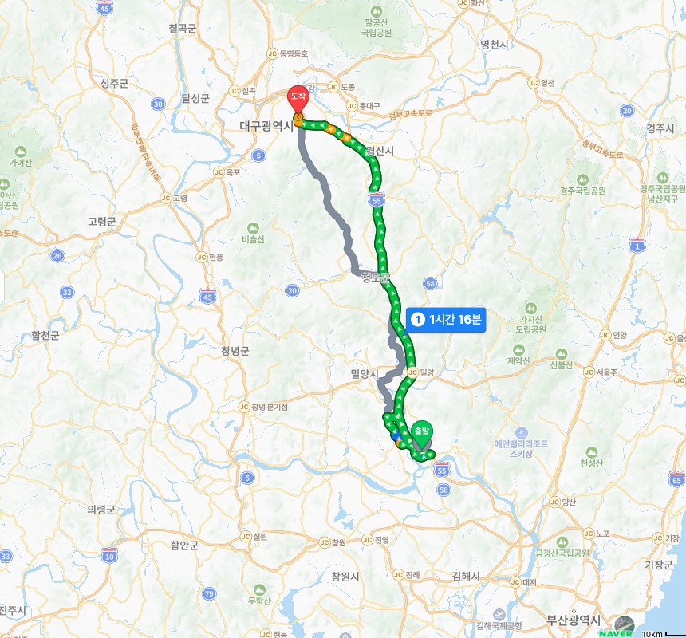
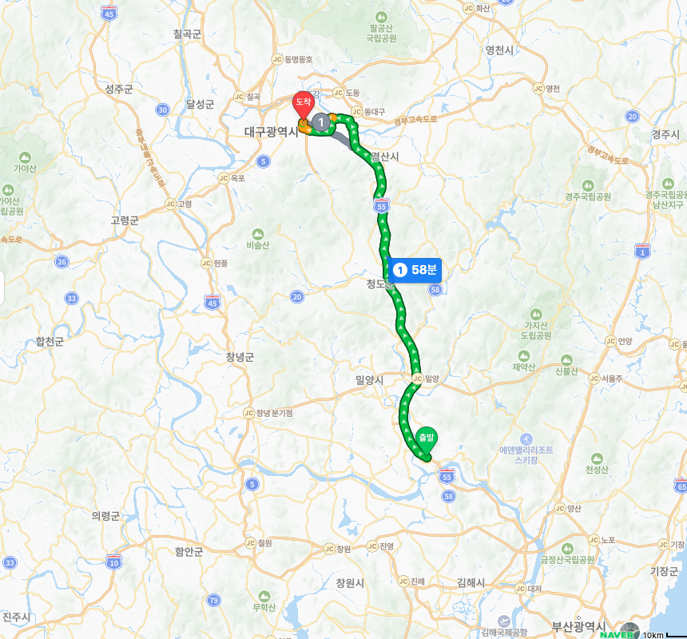

가까워 보이는 주유소 vs 길목이 고른 주유소
같은 출발(경부선 위 주행 중 위치) · 같은 도착(대구시청) · 네이버지도 자동차 길찾기 실제 화면
직선으로 가장 가까운 주유소1시간 16분 · 87 km
삼랑진농협주유소 · 직선 143 m, 고속도로에서 나가 되돌아옴

길목이 고른 주유소58분 · 69 km
HC주유소 · 가던 길 그대로

18분 · 18 km 덜 돌아갑니다
네이버지도 실시간 추천 경로, 2026-11-11 21시 조회. 경유 없이 가면 48분 · 66 km. 부산 → 대구 경로 40% 지점(앱 측정 32지점 중 하나).
32지점 중앙값(앱 계산, OSRM): 직선 최단 주유소 +7.1분, 길목 +0.2분 → docs/savings.md
같은 "주유소 안내", 기준이 다릅니다
각 서비스의 실제 화면 · 아래 한 줄이 주유소를 고르는 기준
네이버지도
실제 화면 캡처 자리
compare_naver_map.png
경로 주변 목록 · 가격순
카카오내비
실제 화면 캡처 자리
compare_kakaonavi.png
경로상 최저가 1곳 추천
티맵
실제 화면 캡처 자리
compare_tmap.png
말로 요청 → 말로 고름
네이버지도·카카오내비·티맵: 2026-11-11 21시 휴대폰 앱 주행 안내 실제 화면. 길목: Pleos 에뮬레이터 실제 화면.
세 앱 모두 운전자가 찾거나 눌러서 고릅니다. 들렀다 가면 몇 분 늦어지는지는 보여 주지 않습니다.
길목은 엔진을 공급하고, 차는 내비에 담습니다
B2B · 운전자는 무료
공급
팀 CRAVE
- 길목 엔진
- 남은 연료 → 단계
- 가는 길 ΔT 계산
- 경유지 자동 설정
CRAVE → 현대차그룹 ▶
Pleos 앱 → 내비 기본 기능앱 마켓 입점 후 엔진 라이선스 (협의)
◀ 현대차그룹 → CRAVE
차량 신호 · 내비 경유지 연동 · 배포Vehicle SDK · NaviHelper · Pleos App Market
탑재
현대차그룹
- Pleos Connect
- 2030년 2,000만 대 목표
- 순정 내비 이용률 68%
- 기존 SDK로 바로 연결
운전자 · 무료
1대 연 1.4시간, 3.5만원 절약 (월 1회 이용 가정)
광고로 추천 순서를 바꾸지 않음
주유소 · DT · 제휴
인카페이먼트 결제 연동 시 리터당 수수료 (가정)
2030년 연 23억원 시나리오
차를 쓰는 모두가 대상, 내비에 들어가면 이만큼
예상 MAU 상한 · 모든 탑재 차 내비에 기본 기능으로 들어간다고 가정
2,667.6만 대
국내 등록 차량2026년 6월 말
2,352.4만 대
연료차 (휘발유·경유·하이브리드) 88%2026년 6월 말 국내 등록
242만 대
2030년 Pleos 탑재 국내 연료차 (가정)2,000만 대 × 국내 판매 17.3% × 연료차 70%
MAU 209만
그 달 1회 이상 쓰는 차 86.5%월 주유 2.8회 + DT 0.3회(가정) = 3.1회
5.3만
지금 설치 가능한 차 (그랜저·아반떼 판매 합)시작점
국내 연료차 전체에 들어가면 MAU 상한 2,034만 (티맵 MAU 1,512만보다 큰 이론값). 순정 내비만 쓰면(68%) 2030년 상한 142만 → 내비 제휴가 필요한 이유.
운전하면 주유하니까, 다시 씁니다
이번 달 쓴 차가 N개월 뒤 그 달에 다시 쓸 비율 (내비 내장 후, 월 이탈 2% 가정)
91%
그 달 다시 이용
주 5.5일 운행 · 월 3.1회 이용
약 12%
DAU / MAU
활성 차량당 월 3.6회
4.2조원
2030년 연 주유 거래액
242만 대(가정) × 1대 174만원